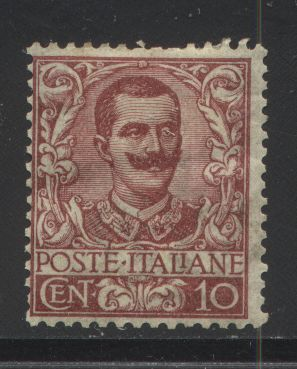
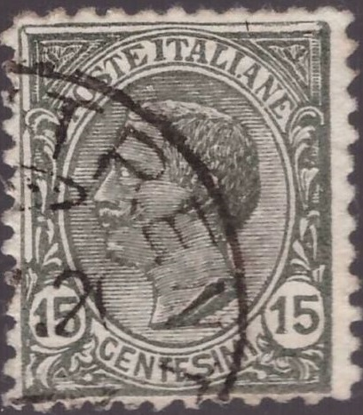
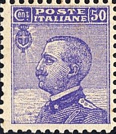

{kind=link}



Return To Catalogue - Italy overview
Note: on my website many of the
pictures can not be seen! They are of course present in the
catalogue;
contact me if you want to purchase the catalogue.
10 c red
20 c orange
25 c blue
25 c green (1926)
40 c brown
45 c green
50 c lilac
75 c red (1926)
1 L brown and green
1.25 L blue (1926)
2 L ('LIRE DUE') grey and orange (1923)
2.50 L blue and red (1926?)
5 L blue and red
10 L ('DIECI LIRE') black and red (1911)
These stamps have watermark 'Crown' and perforation 14:

Value of the stamps |
|||
vc = very common c = common * = not so common ** = uncommon |
*** = very uncommon R = rare RR = very rare RRR = extremely rare |
||
| Value | Unused | Used | Remarks |
| 10 c | *** | vc | |
| 20 c | * | vc | |
| 25 c blue | R | c | |
| 25 c green | c | vc | |
| 40 c | RR | c | |
| 45 c | * | c | |
| 50 c | RR | c | |
| 75 c | * | vc | |
| 1 L | * | vc | |
| 1.25 L | * | vc | |
| 2.50 L | ** | c | |
| 5 L | *** | c | |
| 10 L | *** | * | |
Postal forgeries of the 10 c and 40 c values seem to exist (without watermark), but I have never seen them. The 1 L exists with a 'Columbia' advertisement label attached to it in the colour blue (imperforated between label and stamp, issued in 1924).
Surcharged

'C.15' on 20 c orange (1905) 'Cent. 25' on 45 c green (1924) 'Lire 1,75' and bars on 10 L black and red (1925)
Value of the stamps |
|||
vc = very common c = common * = not so common ** = uncommon |
*** = very uncommon R = rare RR = very rare RRR = extremely rare |
||
| Value | Unused | Used | Remarks |
| 15 c on 20 c | *** | c | |
| 25 c on 45 c | * | * | |
| 1.75 L on 10 L | ** | * | |
Overprinted "BLP" in fancy letters (1921) 1 L brown and green
Value of the stamps |
|||
vc = very common c = common * = not so common ** = uncommon |
*** = very uncommon R = rare RR = very rare RRR = extremely rare |
||
| Value | Unused | Used | Remarks |
| 1 L | RRR | RRR | |
With overprint "CROCIERA ITALIANA 1924"
1 L brown and green 2 L grey and orange Express stamp (larger size)

25 c red (EXPRESSO) 50 c red (1920) 'CENT. 60' on 50 c red (1922) 60 c red (1922) 'Cent. 70' on 60 c red (1925) 70 c red (1925) 1.25 L blue (1926)
Value of the stamps |
|||
vc = very common c = common * = not so common ** = uncommon |
*** = very uncommon R = rare RR = very rare RRR = extremely rare |
||
| Value | Unused | Used | Remarks |
| 25 c | * | c | |
| 50 c | * | c | |
| 60 c on 50 c | ** | c | |
| 60 c | * | c | Exists with advertisement label 'Perugina' (in blue) attached to it (issued in1924): ** |
| 70 c on 60 c | * | c | |
| 70 c | * | c | |
| 1.25 L | ** | ** | |
For these stamps with overprint in 'centesimi di corona' or 'corona' click here. The 25 c express stamp was overprinted "ESPERIMENTO POSTA AREA MAGGIO 1917 TORINO ROMA ROMA TORINO" in 1917 (value: unused *, used: ***). This stamp was used for tests with airmail:

Stamps with overprint "LA CANEA" were issued for Crete.
Fournier forged overprints, image taken from a 'Fournier Album of
Philatelic Forgeries' (reduced size), maybe used for forged
inverted overprints?

15 c black 20 c orange (1916)
There are three types of the 15 c. The 15 c has perforation 12, 13 1/2 or 13 x 13 1/2 (according to the type) and the 20 c 13 1/2 (no watermark) or 14 (watermark 'Crown').
Value of the stamps |
|||
vc = very common c = common * = not so common ** = uncommon |
*** = very uncommon R = rare RR = very rare RRR = extremely rare |
||
| Value | Unused | Used | Remarks |
| 15 c | *** | c | |
| 20 c | *** | c | No watermark |
| 20 c | * | vc | Watermark 'Crown' |
Surcharged
'= CENT.20 =' on 15 c black (1916)
Value of the stamps |
|||
vc = very common c = common * = not so common ** = uncommon |
*** = very uncommon R = rare RR = very rare RRR = extremely rare |
||
| Value | Unused | Used | Remarks |
| 20 c on 15 c | * | c | Exists with double or inverted surcharge: RR |
Overprinted "BLP" in fancy letters (1923, war victims fund)

20 c orange
Value of the stamps |
|||
vc = very common c = common * = not so common ** = uncommon |
*** = very uncommon R = rare RR = very rare RRR = extremely rare |
||
| Value | Unused | Used | Remarks |
| 20 c | R | *** | |


5 c green 10 c red 15 c black (1919)
These stamps have watermark 'Crown' and perforation 14.
Value of the stamps |
|||
vc = very common c = common * = not so common ** = uncommon |
*** = very uncommon R = rare RR = very rare RRR = extremely rare |
||
| Value | Unused | Used | Remarks |
| 5 c | c | vc | |
| 10 c | c | vc | |
| 15 c | c | c | |
Surcharged
"DIECI" and bars on 15 c grey (1925)
Value of the stamps |
|||
vc = very common c = common * = not so common ** = uncommon |
*** = very uncommon R = rare RR = very rare RRR = extremely rare |
||
| Value | Unused | Used | Remarks |
| 10 c on 15 c | c | c | |
Overprinted "BLP" in fancy letters (1923)
(Reduced size)
10 c red (overprint black or blue) 15 c black (overprint red)
Value of the stamps |
|||
vc = very common c = common * = not so common ** = uncommon |
*** = very uncommon R = rare RR = very rare RRR = extremely rare |
||
| Value | Unused | Used | Remarks |
| 10 c | R | R | |
| 15 c | RR | RR | |
The values 10 c and 15 c exist with overprint "IX CONGRESSO FILATELICO ITALIANO TRIESTE 1922" (9th Italian philatelic congress 1922, value: ***):
With overprint 'CROCIERA ITALIANA 1924' 10 c red
The 15 c value exists with advertisement labels attached to it (always imperforated between the stamp and the label, issued in 1924); the following labels exist: Campari Bitter (in blue), Campari Cordial (in black), and Columbia (in blue).
15 c black with two different Campari lables ('Bitter' and
'Cordial')
I've seen a postcared "BIGLIETTO POSTALE DA 5 CENTESIMI" with an image identical to the 5 c green stamp printed on it. Futhermore I have seen a 10 c "CARTOLINA POSTALE ITALIANA (CARTE POSTALE D'ITALIE)" in the 10 c red design.
Stamps with overprint "LA CANEA" were issued for Crete.
Postal forgeries:

Two postal forgeries of the values 15 c and 10 c. Also a
cancelled 15 c forgery.
Two postal forgeries of the value 10 c exist and one postal forgery of the 15 c value. All postal forgeries don't possess a watermark and are printed rather badly (lithographed). The lettering is not perfect. A full description of all 3 postal forgeries can be found in the book: 'Postal Forgeries of the World' by H.G.L. Fletcher. All these forgeries have perforation 11 1/2 instead of 14.

This looks like a forged Philatelic Congress overprint to me.

20 c orange (1925) 20 c green (1925) 20 c brown (1926) 25 c blue 25 c green (1927) 30 c brown (1922) 30 c black (1925) 40 c brown 50 c violet 55 c lilac (1920) 60 c red (1918) 60 c blue (1923) 60 c orange (1926) 85 c brown (1920)
These stamps have watermark 'Crown' and perforation 14. The stamps have either white inscription "CENT POSTE ITALIANE" or the inscription in colour on a white background.
Value of the stamps |
|||
vc = very common c = common * = not so common ** = uncommon |
*** = very uncommon R = rare RR = very rare RRR = extremely rare |
||
| Value | Unused | Used | Remarks |
| 20 c orange | * | c | |
| 20 c green | c | vc | |
| 20 c brown | c | vc | |
| 25 c blue | c | vc | |
| 25 c green | c | c | |
| 30 c brown | * | c | |
| 30 c black | c | vc | |
| 40 c | c | vc | |
| 50 c | * | vc | |
| 55 c | * | * | |
| 60 c red | * | vc | |
| 60 c blue | * | * | |
| 60 c orange | * | vc | |
| 85 c | * | c | |
Surcharged


'Cent. 7 1/2' and bars on 85 c brown (1924) 'CENT 20' and bars on 25 c blue (1925) 'Cent. 25' and bars on 60 c blue (1924) 'CENT 30' and bars on 50 c violet (1925) 'CENT 30' and bars on 55 c lilac (1925) 'Cent. 50' and bars on 40 c brown (1923) 'Cent. 50' and bars on 55 c lilac (1923)
Value of the stamps |
|||
vc = very common c = common * = not so common ** = uncommon |
*** = very uncommon R = rare RR = very rare RRR = extremely rare |
||
| Value | Unused | Used | Remarks |
| 7 1/2 c on 85 c | c | c | |
| 20 c on 25 c | * | c | |
| 25 c on 60 c | * | c | |
| 30 c on 50 c | * | c | |
| 30 c on 55 c | * | * | |
| 50 c on 40 c | * | c | |
| 50 c on 55 c | ** | c | |
Overprinted "BLP" in fancy letters (1923, war victims fund)
25 c blue (overprint red) 40 c brown 50 c violet 60 c red
Value of the stamps |
|||
vc = very common c = common * = not so common ** = uncommon |
*** = very uncommon R = rare RR = very rare RRR = extremely rare |
||
| Value | Unused | Used | Remarks |
| 25 c | *** | *** | |
| 40 c | RR | RR | |
| 50 c | R | R | |
| 60 c | RRR | RRR | |
With overprint "CROCIERA ITALIANA 1924" 30 c brown 50 c violet 60 c blue 85 c brown Express stamps (larger size)

30 c blue and red (EXPRES, 1908) '25' on 40 c violet (ESPRESSO URGENTE, 1917) 'LIRE 1,20' and bars on 30 c blue and red (1921) 1.20 L blue 'Lire 1,60' and bars on 1,20 L blue and red 2 L blue and red (1925) 2.50 L blue and red (1926)
Value of the stamps |
|||
vc = very common c = common * = not so common ** = uncommon |
*** = very uncommon R = rare RR = very rare RRR = extremely rare |
||
| Value | Unused | Used | Remarks |
| 30 c | * | * | |
| 25 c on 40 c | ** | ** | |
| 1.20 L on 30 c | ** | ** | |
| 1.20 L | R | R | |
| 1.60 L on 1.20 L | ** | ** | |
| 2 L | ** | ** | |
| 2.50 L | ** | * | |
These stamps exist with advertisement labels attached to it (1924):

The following values exist with these
advertisement labels (labels in different colour from the stamps,
imperforated between stamp and label):
25 c blue with Abrador (in blue), Coen (in
green), Piperno (in brown), Reinach (in green), Tagliacozzo (in
brown).
30 c brown with Columbia (in green),
50 c violet with Coen (in blue), Columbia (in
red), De Montel (in blue), Piperno (in green), Renach (in blue),
Siero Casali (in blue), Singer (in red, see image above),
Tagliacozzo (in green), Tantal (in red).
The values 25 c and 40 c exist with overprint "IX CONGRESSO FILATELICO ITALIANO TRIESTE 1922" (9th Italian philatelic congress 1922, value: ***):

The express stamp 25 c on 40 c was overprinted "IDROVOLANTE NAPOLI - PALERMO - NAPOLI 25 CENT 25" in 1917 for a test with airmail (value: *; 100,000 stamps issued):

For these stamps with overprint in 'centesimi di corona' click here. Stamps with overprint "LA CANEA" were issued for Crete.

Unofficial Postage Due Stamp 60 c overprinted "T";
issued for the Italian occupation of
Austria
Airmail stamp as issued from 1926 onwards in a similar design,
inscription "POSTA AEREA"; Click
here for more information on airmail stamps

Click here for more information on
pneumatic post stamps

A postal forgery of the 60 c value
A postal forgery of the value 60 c exists. It doesn't possess a watermark and is printed rather badly (lithographed). The lettering is not perfect. According to the book: 'Postal Forgeries of the World' by H.G.L. Fletcher, it exists used in Rome around October 1927. I've also seen this postal forgery largely misperforated.

Possibly another postal forgery of the 50 c value. If my
information is correct, this could be a Livorno postal forgery.
Probably a fiscal stamp, 50 c with overprint "PRESTITO
NAZIONALE 1917"
Forged "B.L.P." overprint made by Sperati.
60 c red 1 L blue 1.25 L blue (1926)
These stamps exist with overprint "ERITREA" to be used in Eritrea and with overprint "CIRENAICA" and "SOMALIA ITALIANA".

1 L with 'ERITREA' overprint
7 1/2 c brown (1929) 15 c orange (1929) 35 c grey (1929) 50 c brown and black 50 c violet (1929) 1.75 L brown 1.85 L black 2.55 L red 2.65 L violet
{kind=link}
{kind=link}
{kind=link}